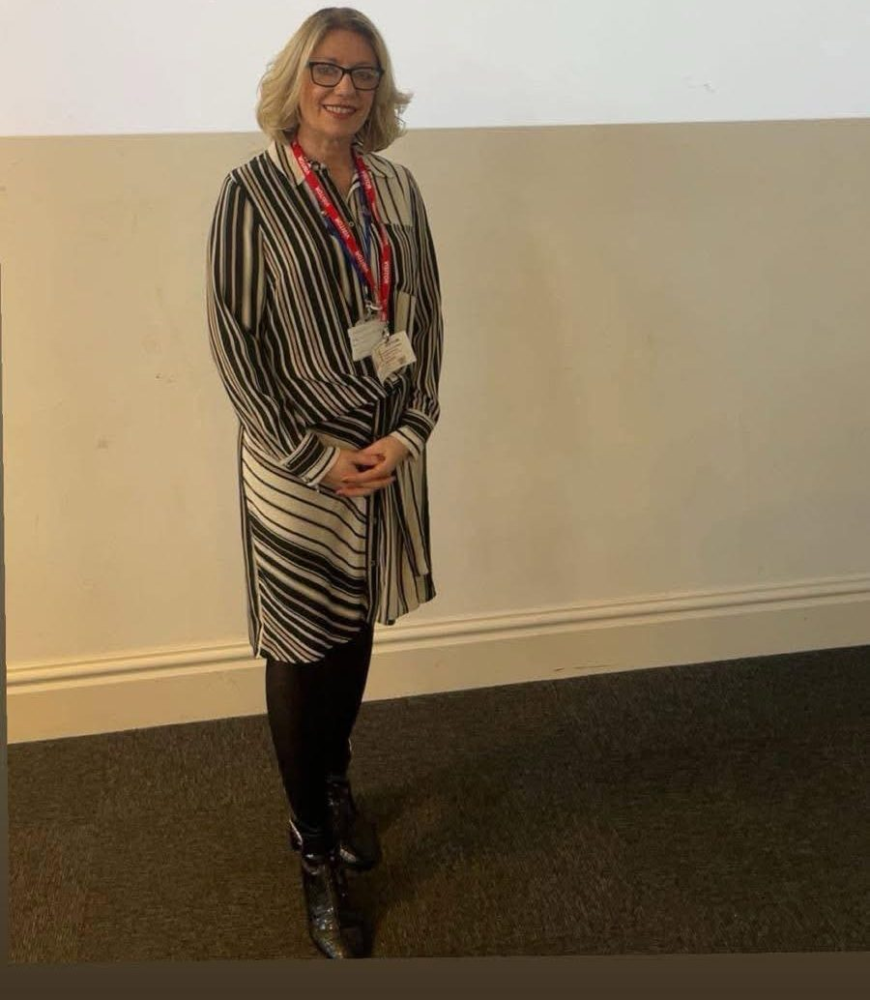

Clare Blackmore is a BACP Registered Counsellor with more than ten years' experience supporting children, young people and adults, across the NHS, education, charities and specialist mental health services including CAMHS, Kooth, Compass, the School Advisory Service and private practice. Her warm, practical approach helps schools feel confident supporting the emotional wellbeing of their pupils.

Tell her what your school community needs this year and she'll suggest the right workshops, training or programme.
Get in touch with Clare See you in the classroom!